| 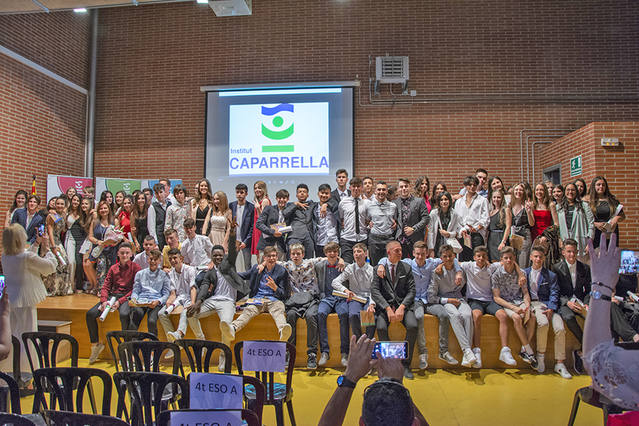 | L’etapa d’educació secundària obligatòria s’estructura en quatre cursos acadèmics que es cursaran normalment entre els dotze i els setze anys. L’educació secundària obligatòria s’inicia l’any natural en què es compleixen els dotze anys. L’educació secundària obligatòria s’organitza en diferents matèries. El quart curs té complementàriament caràcter orientador, tant per als estudis posteriors, com per a la integració a la vida laboral. |
| 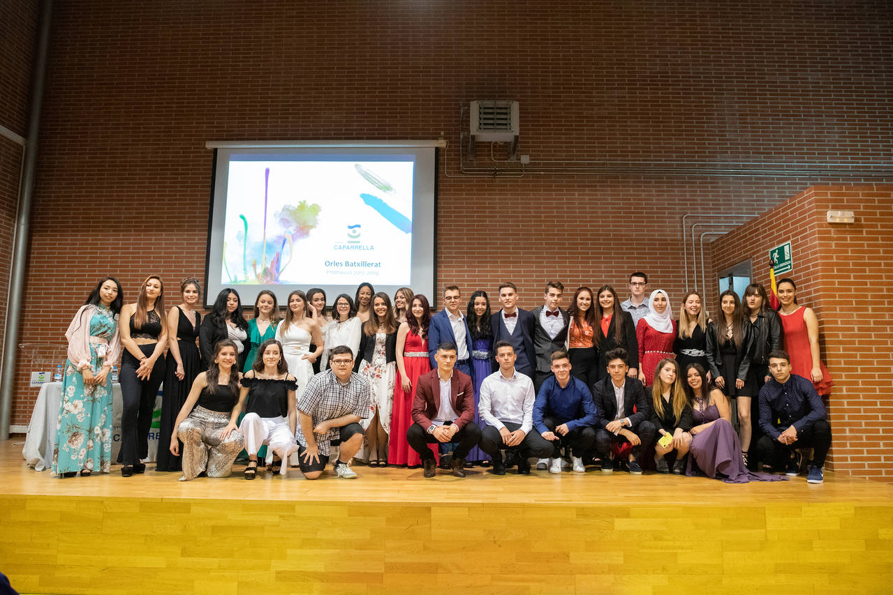 | Els estudis de Batxillerat ofereixen diferents modalitats o recorreguts curriculars i, en començar el Batxillerat, l’alumne escull una modalitat. Cadascuna de les modalitats atendrà les finalitats formativa, orientadora i preparatòria en relació amb els diferents àmbits del saber. Això permet, a més de la formació general de l’alumnat, una adequació a les característiques i interessos i una preparació especialitzada per seguir estudis posteriors o incorporar-se al món del treball. Els estudis de Batxillerat permeten a l’alumnat continuar la seva formació de manera que pugui accedir amb garanties als estudis superiors desitjats. |
| 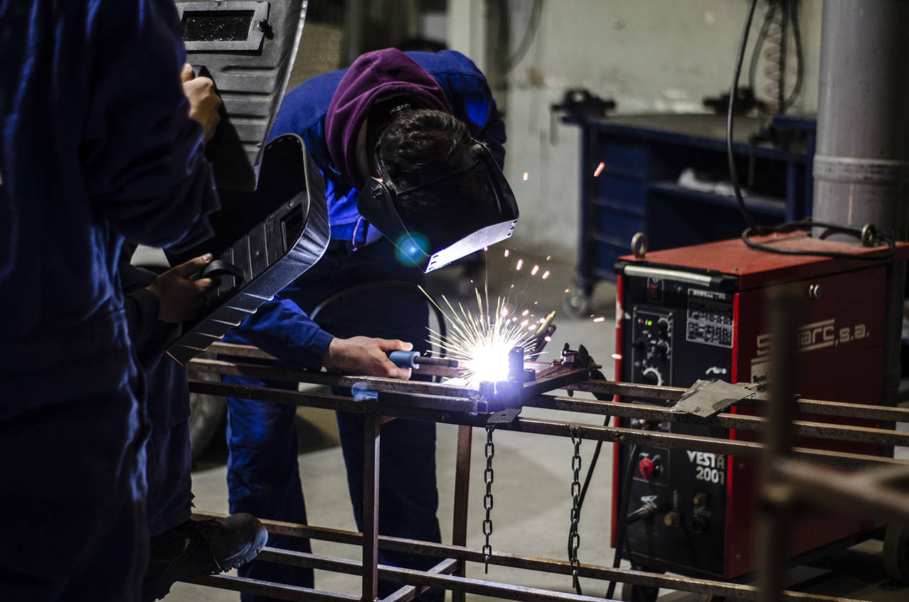 | La competència general d’aquest títol consisteix a realitzar les operacions de reparació, muntatge d’accessoris i transformacions del vehicle en l’àrea de carrosseria, bastidor, cabina i equips o eines, ajustant-se a procediments i temps establerts, complint amb les especificacions de qualitat, seguretat i protecció ambiental. |
| 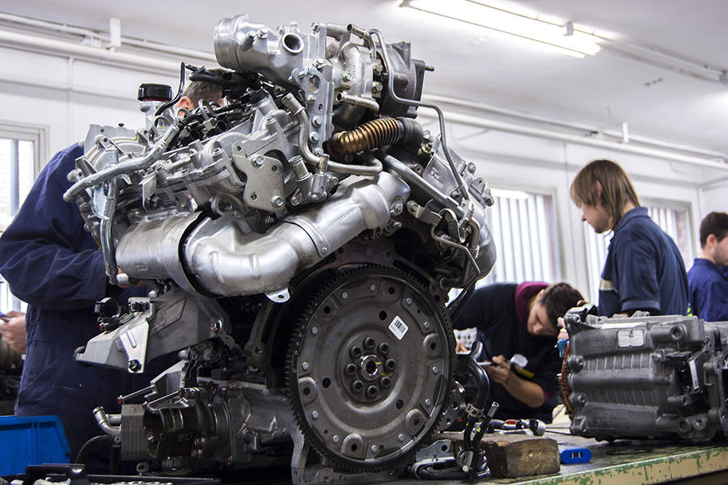 | Aquest cicle s’imparteix en alternança amb empreses del sector, a través de convenis/contractació de l’alumnat per part de les empreses. Al llarg dels tres cursos acadèmics l’alumne/a compagina l’activitat al centre educatiu amb el treball a l’empresa. S’imparteix un currículum adaptat a vehicles industrials. |
| 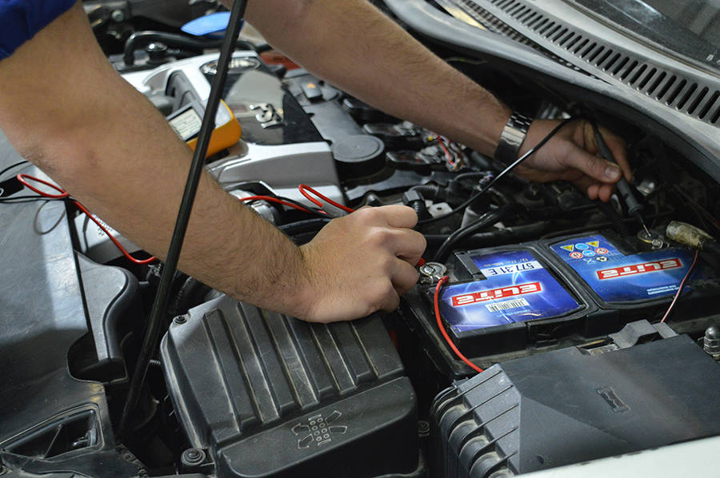 | La competència general d’aquest títol consisteix a realitzar operacions de manteniment, muntatge d’accessoris i transformacions a les àrees de mecànica, hidràulica, pneumàtica i electricitat del sector d’automoció, ajustant-se a procediments i temps establerts, complint amb les especificacions de qualitat, seguretat i protecció ambiental. |
| 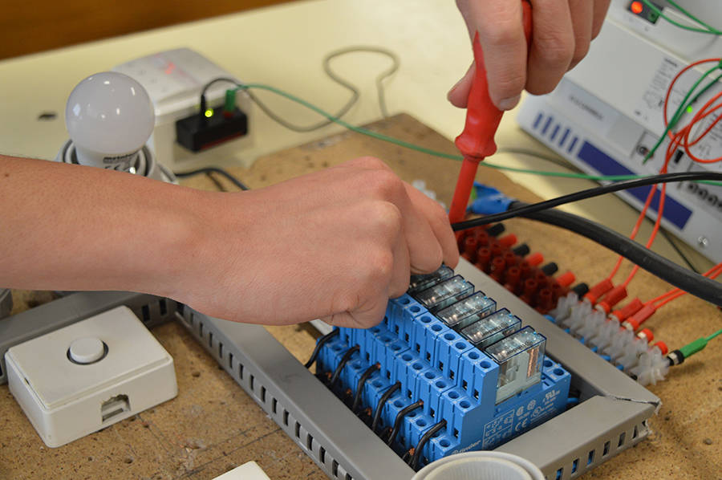 | La competència general d’aquest títol consisteix a muntar i mantenir instal·lacions de telecomunicacions i audiovisuals, instal·lacions de radiocomunicacions i instal·lacions domòtiques, aplicant la normativa i la reglamentació vigents, els protocols de qualitat, de seguretat i de riscos laborals, assegurant-ne la funcionalitat i el respecte al medi ambient. |
| 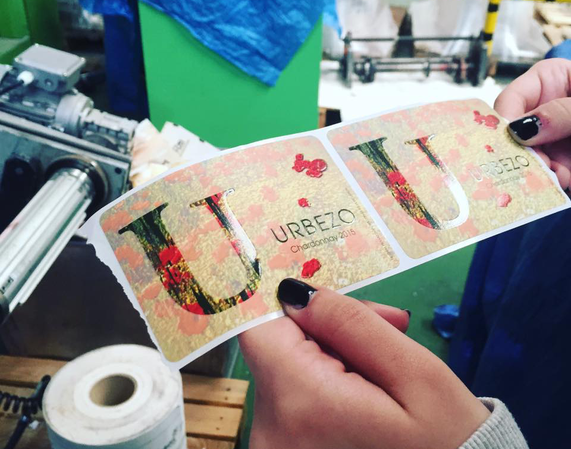 | La competència general d’aquest títol consisteix en realitzar les operacions d’ensamblat per a publicacions electròniques, tractament i compaginació de textos e imatges, imposició de pàgines, la obtenció digital de les formes impressores i la impressió amb procediments digitals, garantint la qualitat, i complint la normativa de seguretat i protecció ambiental. |
| 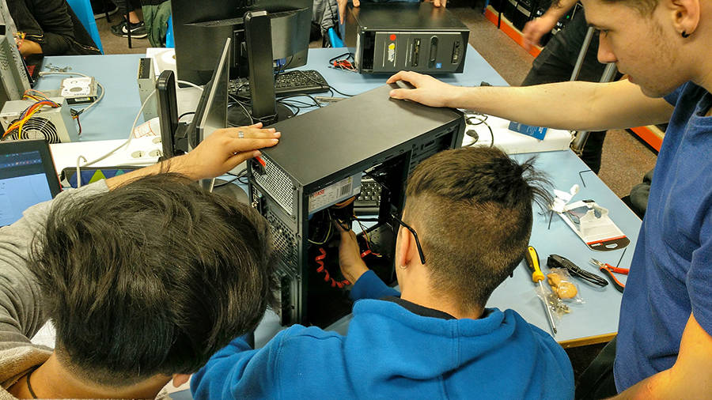 | La competència general d’aquest títol consisteix a instal·lar, configurar i mantenir sistemes microinformàtics, aïllats o en xarxa, així com xarxes locals en petits entorns, assegurant la seva funcionalitat i aplicant els protocols de qualitat, seguretat i respecte al medi ambient establerts. |
| 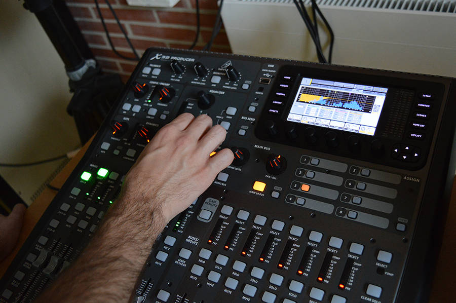 | La competència general d’aquest títol consisteix a realitzar sessions d’animació musical i visual en viu i en directe i efectuar la captació, mescla directa, enregistrament i reproducció de so en tot tipus de projectes sonors. |
| 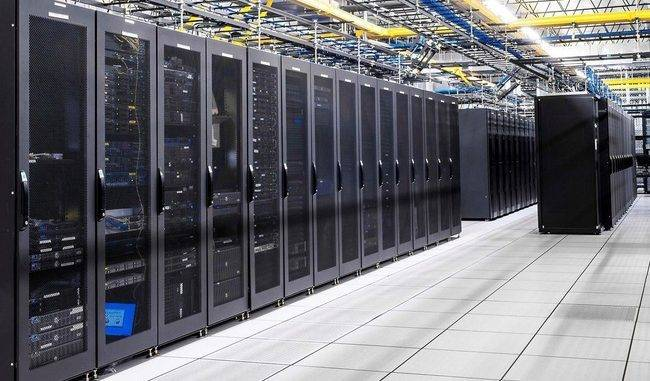 | La competència general d’aquest títol consisteix a configurar, administrar i mantenir sistemes informàtics, garantint la funcionalitat, la integritat dels recursos i serveis del sistema, amb la qualitat exigida i complint la reglamentació vigent. |
| 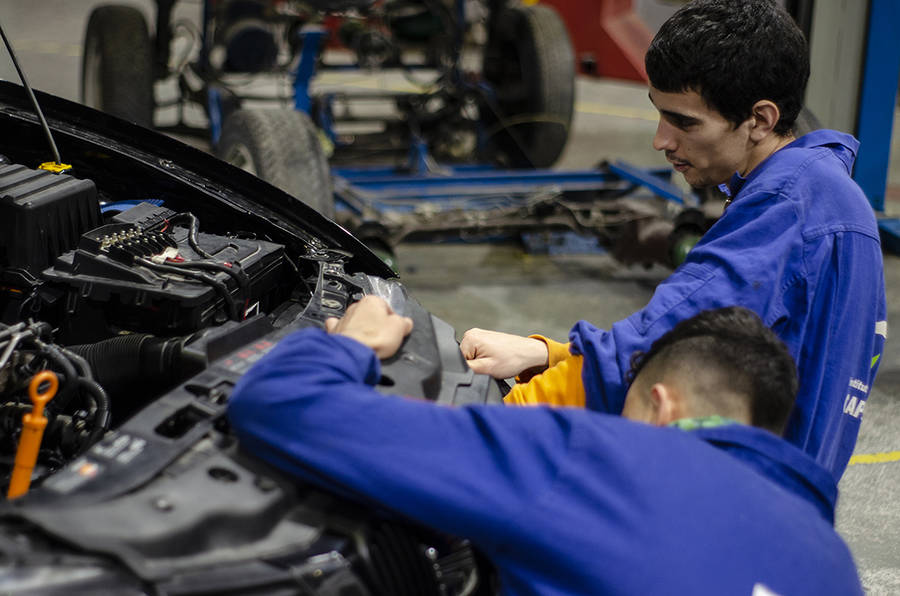 | La competència general d’aquest títol consisteix a organitzar, programar i supervisar l’execució de les operacions de manteniment i la seva logística en el sector d’automoció, diagnosticant avaries en casos complexos, i garantint el compliment de les especificacions establertes per la normativa i pel fabricant del vehicle. |
| 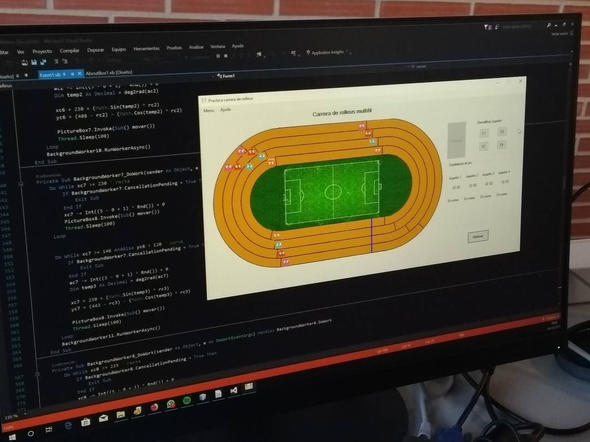 | La competència general d’aquest títol consisteix a desenvolupar, implantar, documentar i mantenir aplicacions informàtiques multiplataforma, utilitzant tecnologies i entorns de desenvolupament específics, garantint l’accés a les dades de forma segura i complint els criteris d’utilització i qualitat exigits en els estàndards establerts. |
| 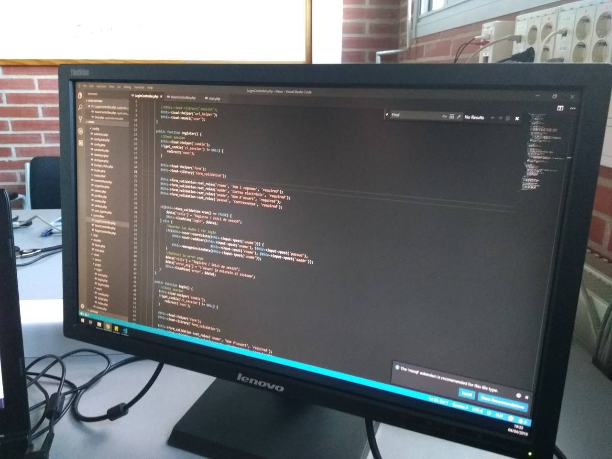 | Competència general del cicle: Desenvolupar, implantar i mantenir aplicacions web, amb independència del model emprat i utilitzant tecnologies específiques del costat client o servidor, garantint-ne l’accés a les dades de forma segura i complint els criteris d’accessibilitat, usabilitat i qualitat exigits pels estàndards establerts. |
La competència general d’aquest títol consisteix a Dissenyar productes gràfics, envasos i embalatges, editar publicacions impreses i electròniques, gestionar i controlar la producció editorial realitzant la publicació i el servei d’atenció al client, aplicant els protocols de qualitat, seguretat i prevenció de riscos laborals, garantint la seva funcionalitat i respecte al medi ambient. |
| 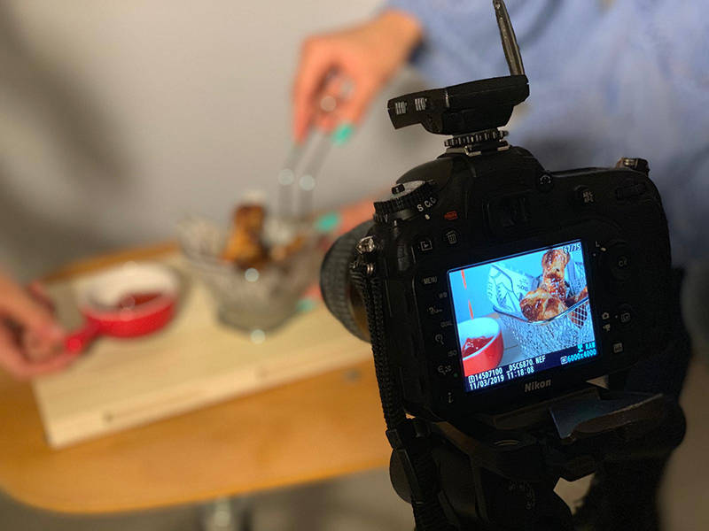 | La competència general d'aquest títol consisteix a realitzar projectes fotogràfics complets, captar, registrar i tractar imatges en produccions audiovisuals i il·luminar espais escènics en audiovisuals, espectacles i esdeveniments, determinant i controlant la qualitat tècnica, formal i expressiva. |
| 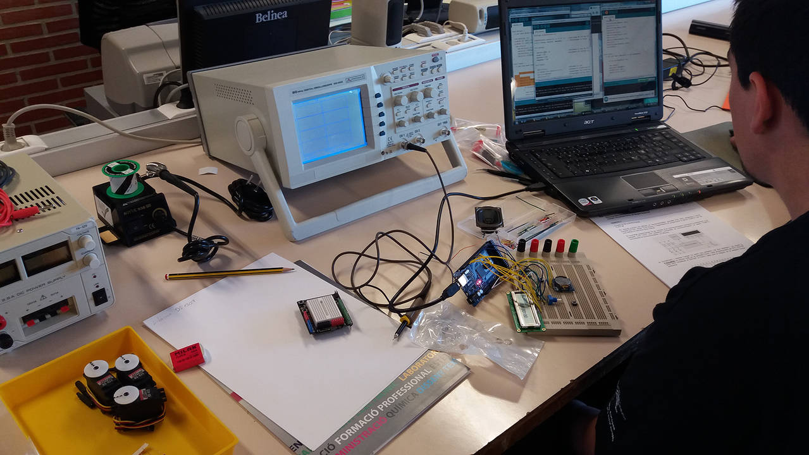 | La competència general d’aquest títol consisteix a mantenir i reparar equips i sistemes electrònics, professionals, industrials i de consum així com a planificar i organitzar els processos de manteniment, aplicant-hi els plans de prevenció de riscos laborals i ambientals, els criteris de qualitat i la normativa vigent. |